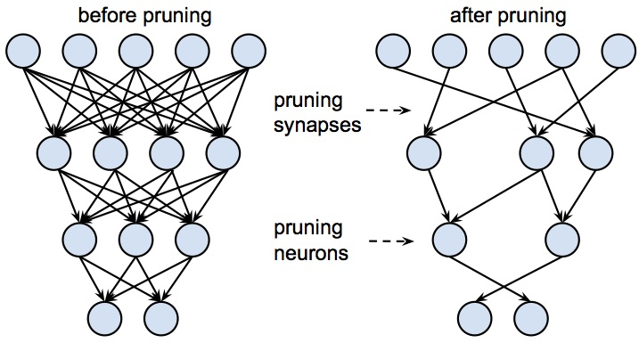
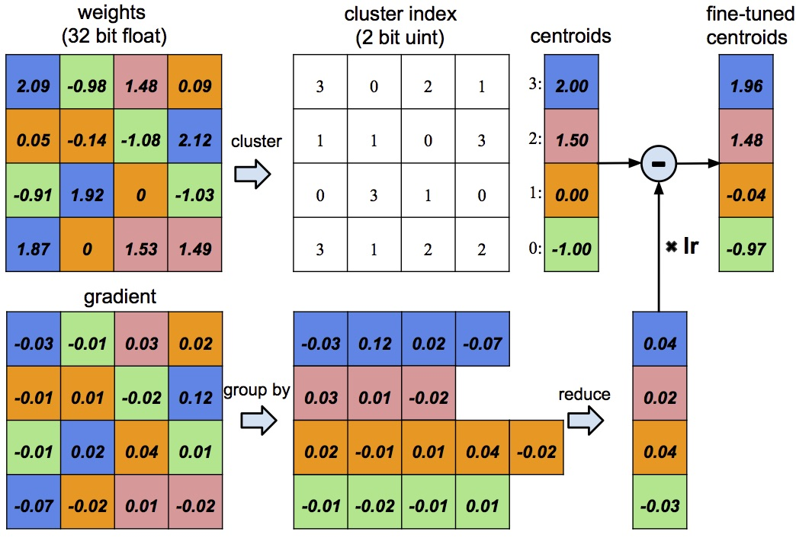
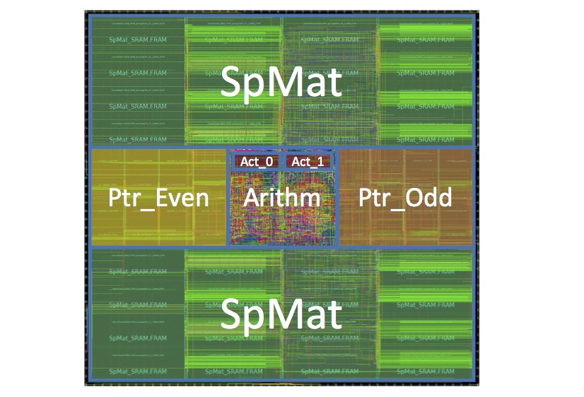
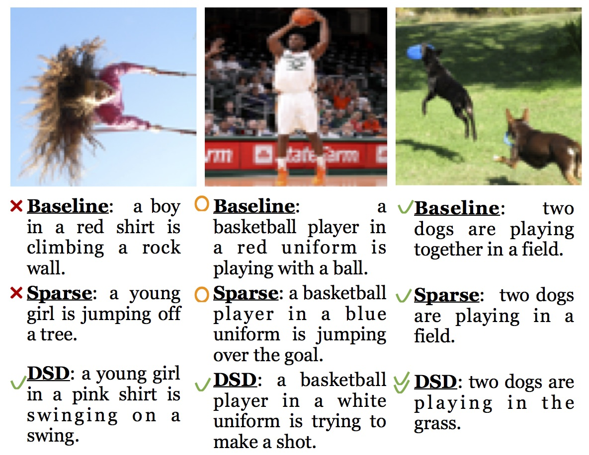
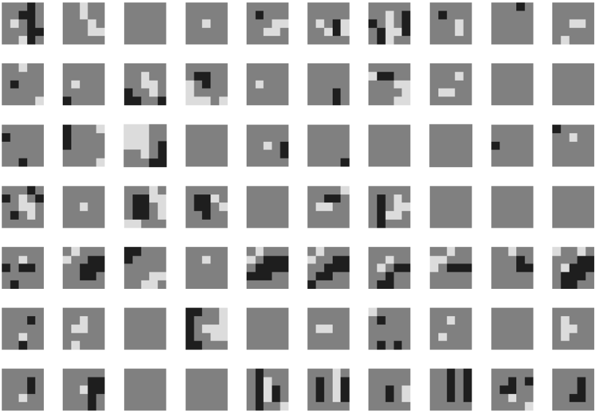
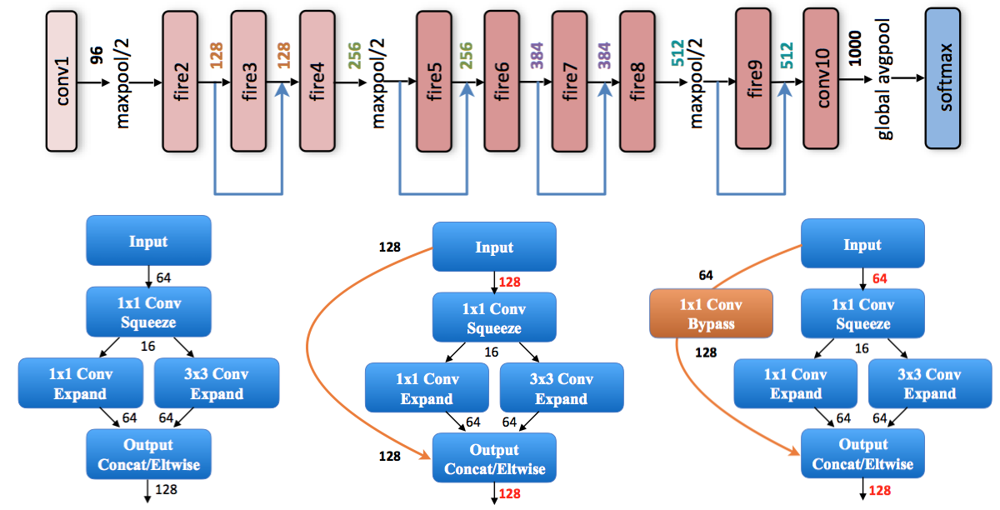
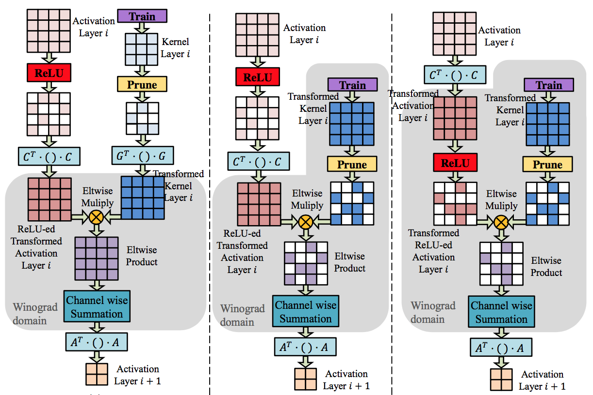

Song Han
Song Han received the Ph.D. degree from Stanford University advised by Prof. Bill Dally. His research focuses on energy-efficient deep learning, at the intersection between machine learning and computer architecture. He proposed Deep Compression that can compress deep neural networks by an order of magnitude without losing the prediction accuracy. He designed EIE: Efficient Inference Engine, a hardware architecture that can perform inference directly on the compressed sparse model, which saves memory bandwidth and results in significant speedup and energy saving. His work has been featured by TheNextPlatform, TechEmergence, Embedded Vision and O’Reilly. He led research efforts in model compression and hardware acceleration for deep learning that won the Best Paper Award at ICLR’16 and the Best Paper Award at FPGA’17. Before joining Stanford, Song graduated from Tsinghua University. |
I will join MIT EECS as an assistant professor starting summer 2018. I'm looking for PhD students interested in deep learning and computer architecture. Welcome to select me as your portfolio reader. I also have multiple openings for summer interns. If you are interested in working with me during summer 2018, drop me an email at FirstnameLastname [at] mit [dot] edu with your CV, publication and research proposal; a demo or proof of conept would be a huge plus.
News
Dec 9, 2017: Song to present Deep Gradient Compression: Reducing the Communication Bandwidth for Distributed Training at NIPS 2017 Workshop: Deep Learning at Supercomputer Scale, Long Beach.
Dec 8, 2017: Song to present Deep Gradient Compression: Reducing the Communication Bandwidth for Distributed Training at NIPS 2017 Workshop on ML Systems, Long Beach.
Dec 6, 2017: Yi and Song to present “Fast-speed Intelligent Video Analytics” at NIPS 2017 demo session, Long Beach.
Sep 1, 2017: Song finished his PhD thesis: Efficient Methods and Hardware for Deep Learning.
July 26, 2017: Song presented Exploring the Regularity of Sparse Structure in Convolutional Neural Networks at CVPR’17 TMCV workshop, Honolulu.
June 1, 2017: Song passed PhD defense. [video].
April 24, 2017: Song presented Dense-Sparse-Dense training, a regularization technique for deep neural networks, at ICLR’17, Toulon, France. [DSD model zoo] [slides]
Feb 24 2017: Song received Best Paper Award for the paper ESE: Efficient Speech Recognition Engine with Sparse LSTM on FPGA at International Symposium on Field-Programmable Gate Arrays (FPGA), Monterey, CA.
Feb 22 2017: Song presents Deep Learning – Tutorial and Recent Trends at FPGA’17, Monterey. [video]
Feb 6 2017: DSD: Dense-Sparse-Dense Training for Deep Neural Networks is accepted by International Conference on Learning Representations (ICLR) 2017.
Feb 6 2017: Trained Tenary Quantization is accepted by International Conference on Learning Representations (ICLR) 2017.
Feb 1 2017: Song presented “Efficient Methods and Hardware for Deep Learning” at Efficient Neural Network Summit, Cadence, San Jose.
Dec 12 2016: Song presented From Compression to Acceleration: Efficient Methods and Hardware for Deep Learning at MIT, Cambridge.
Dec 9 2016: Song received Best Paper Honorable Mention at NIPS’16 workshop on Efficient Methods for Deep Neural Networks, Barcelona, Spain.
Nov 20 2016: “ESE: Efficient Speech Recognition Engine with Sparse LSTM on FPGA” has been accepted to appear at FPGA’17 as a full paper, it is also selected for oral presentation at NIPS’16 workshop on Efficient Methods for Deep Neural Networks.
Oct 28 2016: Song received Best Poster Award at 2016 Stanford Cloud Workshop for his poster entiled “Deep Compression, EIE and DSD: Deep Learning Model Compression, Acceleration, and Regularization”.
Oct 24 2016: Song presented “Deep Compression and EIE: Deep Neural Network Model Compression and Hardware Acceleration” at 2016 IBM Research Workshop on Architectures for Cognitive Computing and Datacenters, Yorktown Heights.
Sep 26 2016: Song presented "Deep Neural Network Model Compression and an Efficient Inference Engine" at O'reilly Artificial Intelligence Conference, New York.
Sep 26 2016: Welcome Huizi and Chenzhuo joining CVA lab.
June 20 2016: Song presented "EIE: Efficient Inference Engine on Compressed Deep Neural Network" at International Symposium on Computer Architecture, Seoul, Korea.
June 10 2016: Song presented "Deep Compression, DSD Training and EIE: deep neural network model compression, regularization and hardware acceleration" at Microsoft Research, Redmond.
May 4 2016: Song received Best Paper Award in International Conference on Learning Representations (ICLR), San Juan, Puerto Rico.
Research Interest
I'm interested in application-driven, domain-specific computer architecture research. The end of Dennard scaling makes power become the key constraint. I'm interested in achieving higher efficiency by tailoring the architecture to characteristics of the application domain. My current research center around co-designing efficient algorithms and hardware systems for machine learning, to free AI from the power hungry hardware beasts and democratize AI to cheap mobile devices, and also reduce the cost of running deep learning on data centers. I enjoy the research intersections across machine learning algorithms, computer architecture and VLSI design.
Research Projects
|  | Neural networks are both computationally intensive and memory intensive, making them difficult to deploy on embedded systems with limited hardware resource. Conventional networks fix the architecture before training starts; as a result, training cannot improve the architecture. To address these limitations, we describe a method to reduce the storage and computation required by neural networks by an order of magnitude by learning only the important connections. This reduced the number of parameters of AlexNet by a factor of 9×, that of VGGNet by 13× without affecting their accuracy. S. Han, J. Pool, J. Tran, W. J. Dally, “Learning both Weights and Connections for Efficient Neural Networks”, NIPS’15. |
|  | Large deep neural network model improves prediction accuracy but results in large demand for memory access, which is 100× more power hungry than ALU operations. “Deep Compression” introduces a three stage pipeline: pruning, trained quantization and Huffman coding, that work together to reduce the storage requirement of deep neural networks. Experimented on Imagenet dataset: AlexNet got compressed by 35×, from 240MB to 6.9MB; VGGNet got compressed by 49×, from 552MB to 11.3MB, without affecting their accuracy. This algorithm helps putting deep learning into mobile App. S. Han, H. Mao, W. J. Dally, “Deep Compression: Compressing Deep Neural Networks with Pruning, Trained Quantization and Huffman Coding”, ICLR’16. Best Paper Award. |
|  | To execute DNNs on inexpensive, low-power embedded platform requires executing compressed, sparse DNNs. EIE is the first hardware accelerator for these highly-efficient networks. EIE exploits weight sparsity, weight sharing, and can skip zero activations from ReLU. Evaluated on nine DNN benchmarks, EIE is 189× and 13× faster, 24,000× and 3,000× more energy efficient than a CPU and GPU respectively. EIE both distributed storage and distributed computation to parallelize a sparsified layer across multiple PEs, which achieves load balance and good scalability. EIE is covered by TheNextPlatform, HackerNews, TechEmergence and Embedded Vision. S. Han, X. Liu, H. Mao, J. Pu, A. Pedram, M. Horowitz, W. J. Dally, “EIE: Efficient Inference Engine on Compressed Deep Neural Network”, ISCA’16. |
 |
ESE takes the approach of EIE one step further to address not only feedforward neural networks but also recurrent neural networks (RNN and LSTM). The recurrent nature produces complicated data dependency, which is more challenging than feedforward neural nets. To deal with this problem, we designed a data flow that can effectively schedule the complex LSTM operations using multiple EIE cores. ESE also present an effective model compression algorithm for LSTM with hardware efficiency considerations, compressed the LSTM by 20x without hurting accuracy. Implemented on Xilinx XCKU060 FPGA running at 200MHz, ESE has a processing power of 282 GOPS/s working directly on a compressed sparse LSTM network, corresponding to 2.52 TOPS/s on an uncompressed dense network. S. Han, J. Kang, H. Mao, Y. Li, D. Xie, H. Luo, Y. Wang, H. Yang, W. J. Dally “ESE: Efficient Speech Recognition Engine for Compressed LSTM”, FPGA’17. Best Paper Award. |
|  | A critical issue for training large neural networks is to prevent overfitting while at the same time providing enough model capacity. We propose DSD, a dense-sparse-dense training flow, for regularizing deep neural networks to achieve higher accuracy. DSD training can improve the prediction accuracy of a wide range of neural networks: CNN, RNN and LSTMs on the tasks of image classification, caption generation and speech recognition. DSD training flow produces the same model architecture and doesn't incur any inference time overhead. S. Han, J. Pool, S. Narang, H. Mao, S. Tang, E. Elsen, B. Catanzaro, J. Tran, W. J. Dally, “DSD: Regularizing Deep Neural Networks with Dense-Sparse-Dense Training Flow”, ICLR’17. |
|  | The deployment of large neural networks models can be difficult for mobile devices with limited power budgets. To solve this problem, we propose Trained Ternary Quantization (TTQ), a method that can reduce the precision of weights in neural networks to ternary values. This method has very little accuracy degradation and can even improve the accuracy of some models. We highlight our trained quantization method that can learn both ternary values and ternary assignment. During inference, our models are nearly 16× smaller than full-precision models. C. Zhu, S. Han, H. Mao, W. J. Dally, “Trained Ternary Quantization”, ICLR’17. |
|  | Smaller CNN model is easier to deploy on mobile devices. SqueezeNet is a small CNN architecture that achieves AlexNet-level accuracy on ImageNet with 50x fewer parameters. Together with model compression techniques we are able to compress SqueezeNet to less than 0.5MB (510× smaller than AlexNet), which can fully fit on-chip SRAM, making it easier to deploy on embedded device. F. Iandola, S. Han, M. Moskewicz, K. Ashraf, W. J. Dally, K. Keutzer, “SqueezeNet: AlexNet-Level Accuracy with 50x Fewer Parameters and < 0.5MB Model Size”, arXiv 16. |
|  | Winograd’s minimal filtering algorithm and network pruning both reduce the operations in CNNs. Unfortunately, these two methods cannot be combined. We propose two modifications to Winograd-based CNNs to enable these methods to exploit sparsity. First, we prune the weights in the ”Winograd domain” to exploit static weight sparsity. Second, we move the ReLU operation into the ”Winograd domain” to improve the sparsity of the transformed activations. On CIFAR-10, our method reduces the number of multiplications in the VGG-nagadomi model by 10.2× with no loss of accuracy. X. Liu, S. Han, H. Mao, W. J. Dally, “Efficient Sparse-Winograd Convolutional Neural Networks”, ICLR’17 workshop. |
Publications
DSD: Dense-Sparse-Dense Training for Deep Neural Networks
Song Han, Jeff Pool, Sharan Narang, Huizi Mao, Shijian Tang, Erich Elsen, Bryan Catanzaro, John Tran, William J. Dally
to appear at International Conference on Learning Representations (ICLR), April 2017.
Trained Tenary Quantization
Chenzhuo Zhu, Song Han, Huizi Mao, William J. Dally
to appear at International Conference on Learning Representations (ICLR), April 2017.
Software-Hardware Co-Design for Efficient Neural Network Acceleration
Kaiyuan Guo, Song Han, Song Yao, Yu Wang, Yuan Xie, Huazhong Yang
to appear at Hot Chips special issue of IEEE Micro, March/April 2017
ESE: Efficient Speech Recognition Engine for Sparse LSTM on FPGA
Song Han, Junlong Kang, Huizi Mao, Yubin Li, Dongliang Xie, Hong Luo, Yu Wang, Huazhong Yang, William J. Dally
NIPS workshop on Efficient Methods for Deep Neural Networks (EMDNN), Dec 2016, Best Paper Honorable Mention.
International Symposium on Field-Programmable Gate Arrays (FPGA), Feb 2017, Best Paper Award.
Compressing and Regularizing Deep Neural Networks, Improving Prediction Accuracy Using Deep Compression and DSD Training
Song Han
O’Reilly, Nov 2016.
EIE: Efficient Inference Engine on Compressed Deep Neural Network
Song Han, Xingyu Liu, Huizi Mao, Jing Pu, Ardavan Pedram, Mark Horowitz, William J. Dally
International Symposium on Computer Architecture (ISCA), June 2016; Hotchips, Aug 2016.
Deep Compression: Compressing Deep Neural Networks with Pruning, Trained Quantization and Huffman Coding
Song Han, Huizi Mao, William J. Dally
NIPS Deep Learning Symposium, December 2015.
International Conference on Learning Representations (ICLR), May 2016, Best Paper Award.
Learning both Weights and Connections for Efficient Neural Networks
Song Han, Jeff Pool, John Tran, William J. Dally
Advances in Neural Information Processing Systems (NIPS), December 2015.
SqueezeNet: AlexNet-Level Accuracy with 50x Fewer Parameters and < 0.5MB Model Size
Forrest Iandola, Song Han, Matthew Moskewicz, Khalid Ashraf, William J. Dally, Kurt Keutzer
arXiv 2016.
Angel-Eye: A Complete Design Flow for Mapping CNN onto Customized Hardware
Kaiyuan Guo, Lingzhi Sui, Jiantao Qiu, Song Yao, Song Han, Yu Wang, Huazhong Yang
IEEE Computer Society Annual Symposium on VLSI (ISVLSI), July 2016.
Hardware-friendly Convolutional Neural Network with Even-number Filter Size
Song Yao, Song Han, Kaiyuan Guo, Jianqiao Wangni, Yu Wang, William J. Dally
International Conference on Learning Representations Workshop, May 2016.
Invited Talks
Deep Learning – Tutorial and Recent Trends
Conference tutorial at FPGA’17, Monterey. [slides]
Deep Compression: A Deep Neural Network Compression Pipeline
Conference talk at ICLR, Puerto Rico, May 2016.
GPU Technology Conference (GTC), San Jose, March 2016.
Google, Mountain View, March 2015.
Stanford Computer System Colloquium, January 2016. Video.
Baidu, Beijing, December 2015.
Huawei, Shanghai, December 2015.
Horizon Robotics, Beijing, December 2015.
EIE: Efficient Inference Engine on Compressed Deep Neural Network
Conference talk at ISCA, Korea, June 2016.
Movidius, San Mateo, April 2016.
HP Labs, Palo Alto, February 2016.
Apple, Cupertino, December 2015.
Huawei, Shanghai, December 2015.
HiScene, Shanghai, December 2015.
Stanford SystemX Fall Conference, Stanford, November 2015.
Techniques for Efficient Implementation of Deep Neural Networks
Embedded Vision Alliance Member Meeting, March 2016.
-
O’Reilly Artificial Intelligence Conference, New York, Sep 2016.
Facebook, Menlo Park, Aug 2016.
Tesla, Palo Alto, Aug 2016.
Xilinx, Santa Clara, Aug 2016.
OpenAI, San Francisco, Aug 2016. Video.
Microsoft Research Asia, Beijing, June 2016.
Microsoft Research, Redmond, June 2016.
Apple, Cupertino, June 2016.
Education
Ph.D. Stanford University, Sep. 2012 to Jun. 2017
M.S. Stanford University, Sep. 2012 to Jun. 2014
B.S. Tsinghua University, Aug. 2008 to Jul. 2012
Services
Reviewer for Journal of Machine Learning Research (JMLR)
Reviewer for IEEE Transactions on Neural Networks and Learning Systems (TNNLS)
Reviewer for Computer Vision and Image Understanding (CVIU)
Reviewer for IEEE Journal of Solid State Circuits (JSSCC)
Reviewer for IEEE Micro
Reviewer for IEEE Transactions on Computer-Aided Design of Integrated Circuits & Systems (TCAD)
Reviewer for ACM Journal on Emerging Technologies in Computing Systems (JETC)
Reviewer for IEEE Embedded Systems Letters (ESL)
Reviewer for 30th Annual Conference on Neural Information Processing Systems (NIPS)
Reviewer for 22nd International Conference on Architectural Support for Programming Languages and Operating Systems (ASPLOS)
Contact
Email: FirstnameLastname [at] cs [dot] stanford [dot] edu
Office: Gate Computer Science Building, Room 216
Address: 353 Serra Mall, Stanford, CA 94305